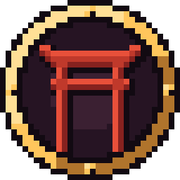

gonver estudio
Beta
聖域への道
PATH TO THE SANCTUARY
Diez comarcas, cien sendas y un trono que alcanzar.
01Juegos
Nuestros juegos
Esto no ha hecho más que empezar.
02Estudio
Todo está hecho por una única persona, pero con ayuda de la comunidad.
En gonver estudio hacemos videojuegos y nos importan dos cosas.
-
01
Desarrollo a la vista
Cada actualización se publica versión a versión, lo que te permite ver cómo crece el juego desde la primera versión.
-
02
La comunidad decide
Las ideas y los errores que envías se votan en un tablón público. Lo más votado es lo que llega antes.

03Comunidad
Tu idea puede acabar en el juego
Propón lo que te gustaría ver, avisa de lo que falla y vota lo que más importa. El tablón de Path to the Sanctuary está abierto a todo el mundo.